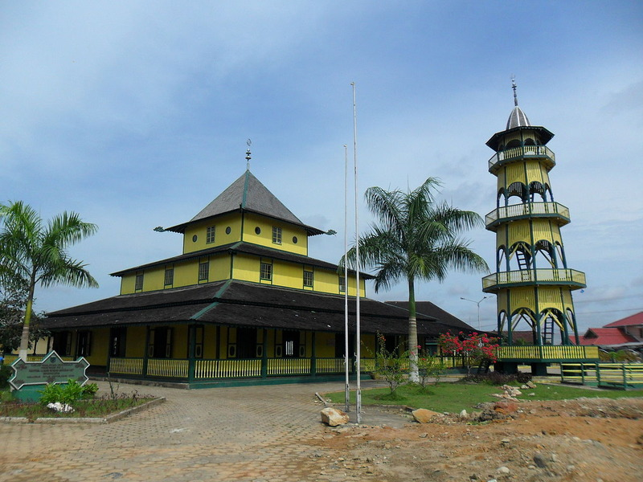

Sejarah
Samarinda, ibu kota Kalimantan Timur, memiliki sejarah yang kaya sejak abad ke-17. Kota Samarinda didirikan oleh suku Bugis Wajo yang datang dari Sulawesi Selatan. Mereka menetap di tepi Sungai Mahakam, yang kemudian menjadi pusat perkembangan kota. Pada masa kolonial Belanda, Samarinda tumbuh pesat sebagai pusat perdagangan karena lokasinya yang strategis. Pertanian, perikanan, dan perdagangan kayu menjadi sektor utama ekonomi. Pada 1950, Samarinda diresmikan sebagai ibu kota provinsi. Seiring waktu, Samarinda berkembang menjadi pusat industri dan pendidikan penting di Kalimantan.
Nama Samarinda berasal dari istilah “sama rendah,” yang mencerminkan semangat kesetaraan dan kebersamaan di antara para pendatang. Mereka mendirikan rumah-rumah panggung yang tingginya sama, sehingga mencerminkan persatuan. Hingga kini, nama Samarinda tetap melekat sebagai simbol persaudaraan masyarakatnya.
Geografis
Samarinda terletak di tepi Sungai Mahakam yang membelah kota ini menjadi dua bagian. Secara geografis, Samarinda berada di koordinat 0°23' LU dan 117°09' BT, dengan topografi yang bervariasi dari dataran rendah hingga perbukitan, khususnya di wilayah barat. Beriklim tropis lembap, Samarinda sering mengalami curah hujan tinggi sepanjang tahun. Hutan tropis di sekitarnya kaya akan sumber daya alam seperti kayu dan batu bara, yang mendukung ekonomi lokal.
Samarinda terletak di tepi Sungai Mahakam, yang merupakan sungai terbesar di Kalimantan Timur. Sungai ini menjadi pusat aktivitas ekonomi dan transportasi, menghubungkan pedalaman dengan pesisir. Aliran Sungai Mahakam juga membentuk ekosistem penting, mendukung perikanan serta irigasi untuk pertanian di wilayah sekitar.
Wisata
Sejak pembangunan Jembatan Mahakam dan peningkatan infrastruktur jalan, Kota Samarinda telah menjadi tujuan favorit untuk liburan akhir pekan, terutama bagi masyarakat yang berasal dari wilayah sekitarnya. Selain menjadi kota dengan pesona wisata alam, Kota Samarinda juga dikenal dengan kekayaan budaya dan bangunan-bangunan peninggalan masa kerajaan.
Rumah Ulin Arya
Berada di daerah Sempaja, Rumah Ulin Arya menjadi objek wisata yang tidak pernah sepi pengunjung. Selain karena letaknya strategis, kawasan ini juga menghadirkan nuansa wisata khas alam. Semua itu diterapkan dalam bentuk spot swafoto Instagramable.
Masjid Shiratal Mustaqiem

Masjid Shiratal Mustaqiem merupakan masjid tertua yang terletak di kota Samarinda, didirikan pada tahun 1881 oleh Pangeran Bendahara Said Abdurachman. Masjid ini memiliki sejarah penting sebagai pusat syiar Islam di Samarinda Seberang, yang sebelumnya dikenal sebagai kawasan maksiat. Memiliki menara setinggi 21 meter, masjid ini dibangun menggunakan kayu ulin dari beberapa kampung. Pada tahun 2003, Masjid Shiratal Mustaqiem menjadi pemenang kedua dalam festival masjid bersejarah di Indonesia.